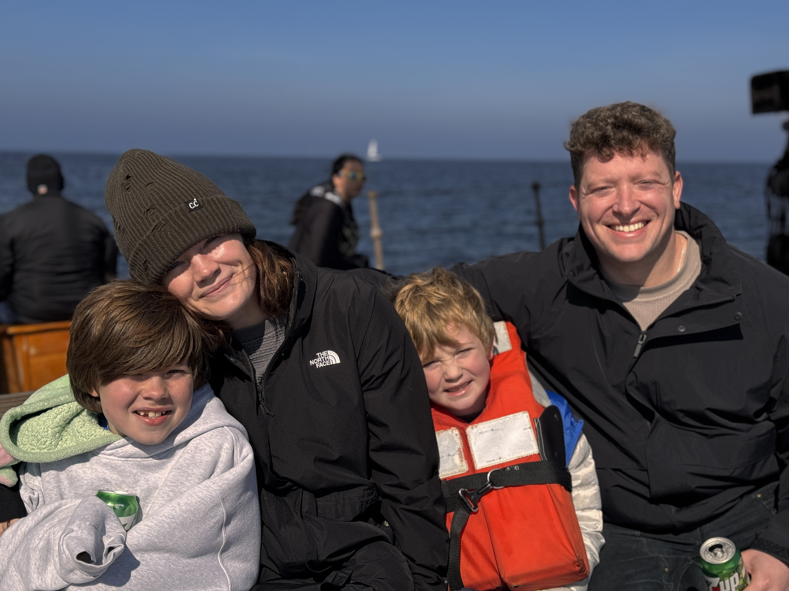

About Me
Hi! I'm Jordan, a passionate photographer based in San Diego, California. I specialize in capturing beautiful moments, whether it's a wedding, a portrait session, or a special event. Photography is my way of preserving memories and telling stories through images. I started this journey with the goal of not just taking pictures, but creating lasting impressions.
When I'm not behind the lens, I love spending time with my family, exploring new places, and seeking out new inspiration. I'm always looking for ways to challenge myself and grow as an artist.
If you'd like to work with me, feel free to check out my portfolio or book an appointment directly through my website!